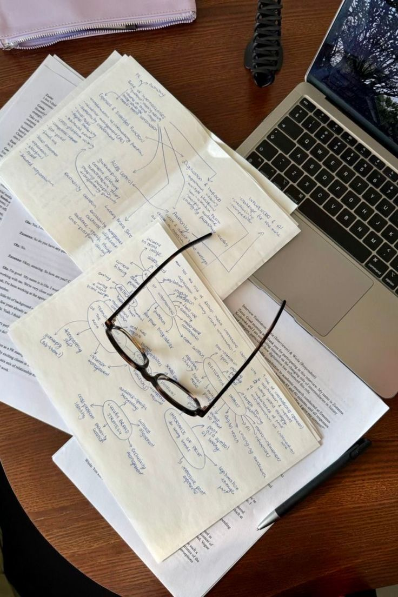

Credo tantissimo nell'aiuto reciproco e nell'importanza di fare rete.Grazie alla mia esperienza attiva
nell' associazionismo studentesco
e alla mia laurea in Lingue e Letterature- Studi Interculturali. , ho avuto modo di sviluppare
una grande propensione all'ascolto e alla
comunicazione chiara.
Durante i miei anni passanti all'università ho supportato tantissimi colleghi nel loro percorso accademico,
seguendo in prima persona anche gli studenti stranieri ed Erasmus,in quanto ho avuto la possibilità di
svolgere un tirocinio presso il CLA
ovvero il Centro Linguistico d'Ateneo , aiutandoli così a superare
uno scoglio linguistico.
Ho quindi deciso di mettermi di nuovo in gioco e poter dare una grande mano d'aiuto. Ma come?
Attraverso un Tutorato Internazionale e Linguistico mirato in particolare a studenti stranieri per far si che riescano ad inserirsi nel percorso accademico nel migliore dei modi.
Ma non mi fermo mica qui, ho anche intenzione di dare un aiuto pratico per chi ha appena iniziato l'univeristà e si sente perso, grazie ad un orientamento universitario ed anche un metodo di studio personalizzato perchè si sa che non esiste un metodo di studio valido per tutti, e per questo motivo voglio aiutare ogni singolo ragazzo ad organizzare il suo tempo o riordinare gli appunti al fine di trovare la strategia più adatta.

Molto spesso l'università può sembrare un labirinto, soprattutto quando ci si trova in una nuova città con abitudini e lingua diverse. Il mio obiettivo non è solo quello di aiutare i ragazzi con le loro materi, ma è quello di dare loro strumenti e fiducia necessare per poter camminare con le loro gambe.